Year 2026:
-
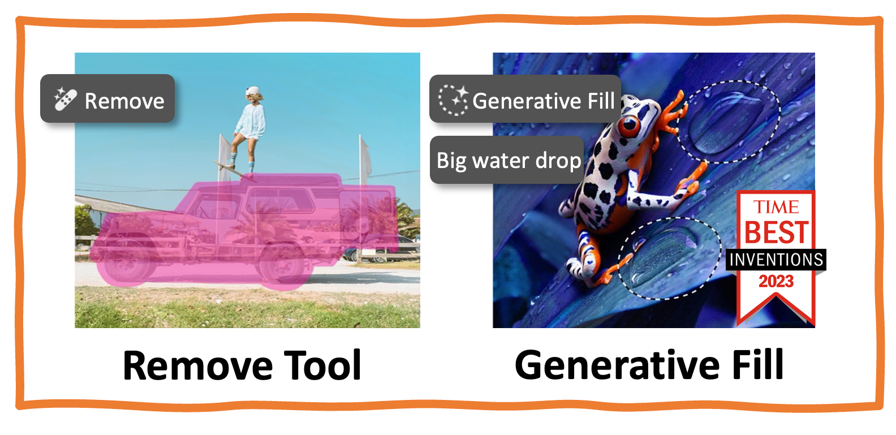
HiLo-Token: Input-Adaptive High-Low Frequency Token Compression for Efficient Image Editing
Model Shipped to Photoshop
H. You✉, Y. Nitzan, L. Zhang, Y. Gong, M. T. Chiu, C. Barnes, Y. Kang, Y. Zhou,
E. Shechtman, S. Amirghodsi✉
[Paper] [Photoshop]
-
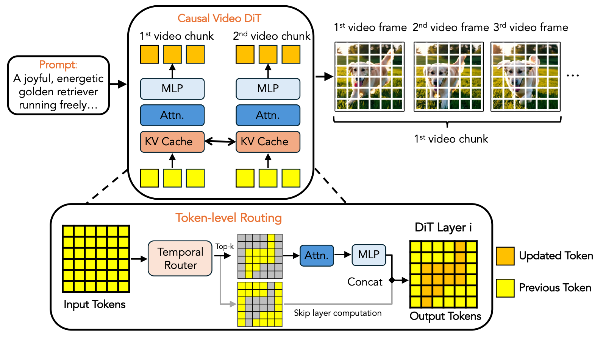
VideoDiffCR: Content-Aware Adaptive Token Pruning for Autoregressive Video Diffusion Transformers
In ICML F2S Workshop
A. Shrivastava, C. Barnes, H. You, Y. Gong, Y. Kang, A. Owens, E. Shechtman
[Paper] [Extension of DiffCR]
-
 UniSER: A Foundation Model for Unified Soft Effects Removal
UniSER: A Foundation Model for Unified Soft Effects Removal
In CVPR 2026 (Acceptance rate: 25%)
J. Zhang, L. Zhang, Q. Liu, M. T. Chiu, C. Barnes, Y. Wang, H. You, X. Liu, Y. Zhou, Z. Lin, E. Shechtman, S. Amirghodsi, X. Li, W. Wang, X. Zhan
[Paper]
Year 2025:
-
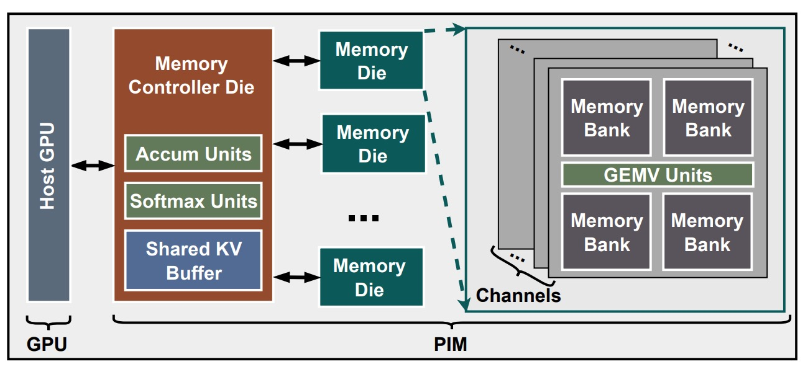
ORCHES: Orchestrated Test-Time-Computation-based LLM Reasoning on Collaborative GPU-PIM HEterogeneous System
In MICRO 2025 (Acceptance rate: 21%)
S. Li, Y. Chen, C. Li, Y. Fu, Z. Wang, Z. Yu, H. You, Z. Ye, W. Zhou, L. Zhang, Y. Lin
[Paper]
-
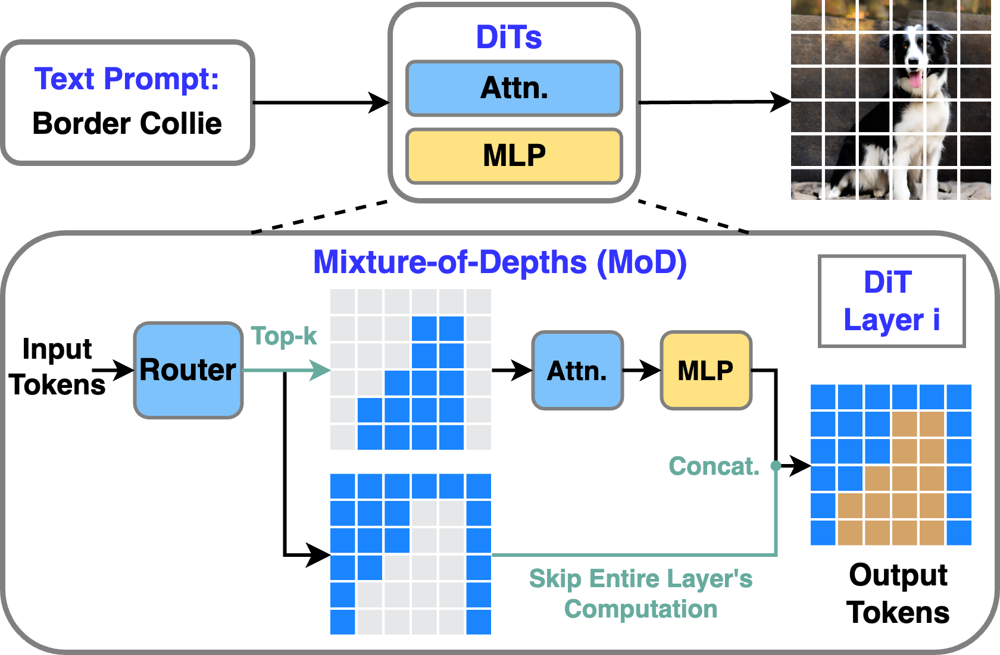
DiffCR: Layer- and Timestep-Adaptive Differentiable Token Compression Ratios for Efficient Diffusion Transformers
In CVPR 2025 (Acceptance rate: 22%)
H. You, C. Barnes, Y. Zhou, Y. Kang, Z. Du, W. Zhou, L. Zhang, Y. Nitzan, X. Liu, Z. Lin, E. Shechtman, S. Amirghodsi, Y. Lin
[Paper] [Code] [Project] [Poster]
Adobe Internship Project -
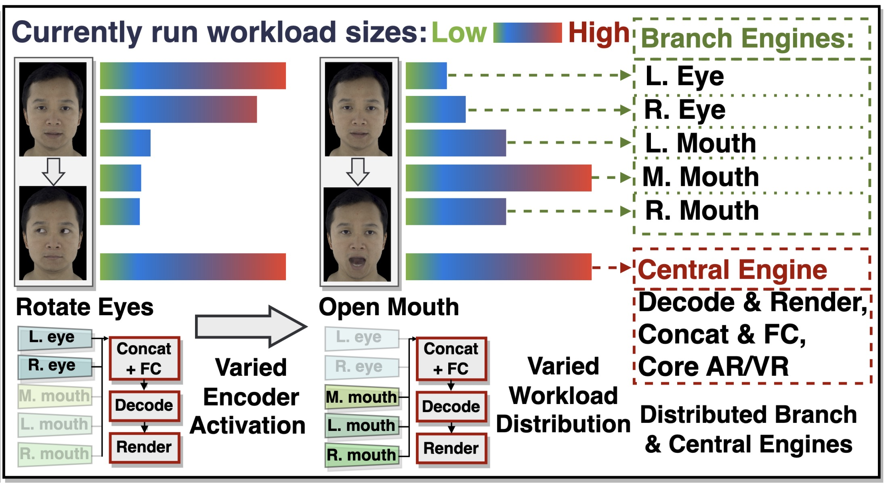
Re-CATA: Real-Time and Flexible Accelerator Design Framework for On-device Codec Avatars
In IEEE TCAD, 2025
Y. Zhang, Y. Li, H. Yang, S. Sarwar, H. Sumbul, Y. Fu, H. You, C. Wan, Y. Lin
[Paper]
In Collaboration with Meta
Year 2024:
-
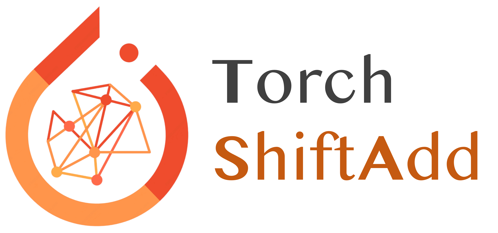
ShiftAddLLM: Accelerating Pretrained LLMs via Post-Training Multiplication-Less Reparameterization
In NeurIPS 2024 (Acceptance rate: 26%)
H. You, Y. Guo, Y. Fu, W. Zhou, H. Shi, X. Zhang, S. Kundu, A. Yazdanbakhsh, Y. Lin
[Paper] [Code] [Poster] [Talk@NeurIPS]
In Collaboration with Intel, Google, and Google DeepMind -
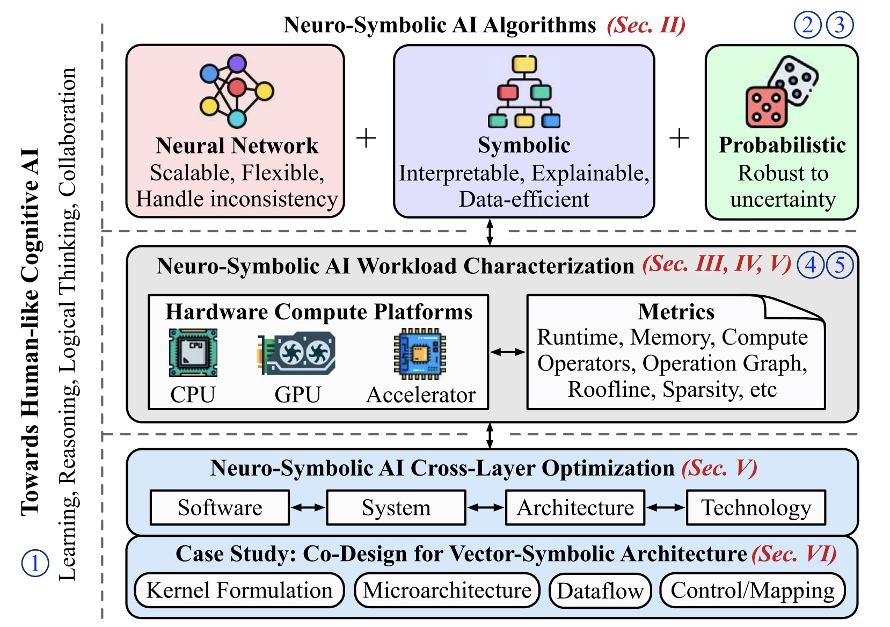
Towards Efficient Neuro-Symbolic AI: From Workload Characterization to Hardware Architecture
In IEEE TCASAI 2024
Z. Wan, C. Liu, H. Yang, R. Raj, C. Li, H. You, Y. Fu, C. Wan, S. Li, Y. Kim, A. Samajdar, Y. Lin, M. Ibrahim, J. Rabaey, T. Krishna, A. Raychowdhury
Best Paper Award at DARPA SRC JUMP2.0 CoCoSys Center 2024 !
[Paper] -
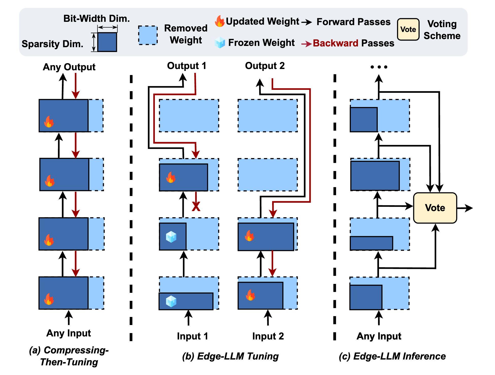
EDGE-LLM: Enabling Efficient Large Language Model Adaptation on Edge Devices via Layerwise Unified Compression and Adaptive Layer Tuning & Voting
In DAC 2024 (Acceptance rate: 22%)
Z. Yu, Z. Wang, Y. Li, H. You, R. Gao, X. Zhou, S. Bommu, Y. Zhao, Y. Lin
[Paper]
Year 2023:
-
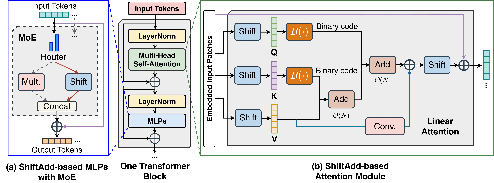
ShiftAddViT: Mixture of Multiplication Primitives Towards Efficient Vision Transformer
In NeurIPS 2023 (Acceptance rate: 26%)
H. You*, H. Shi*, Y. Guo*, Y. Lin
[Paper] [Code] [Slide] [Poster] [Talk@NeurIPS] -
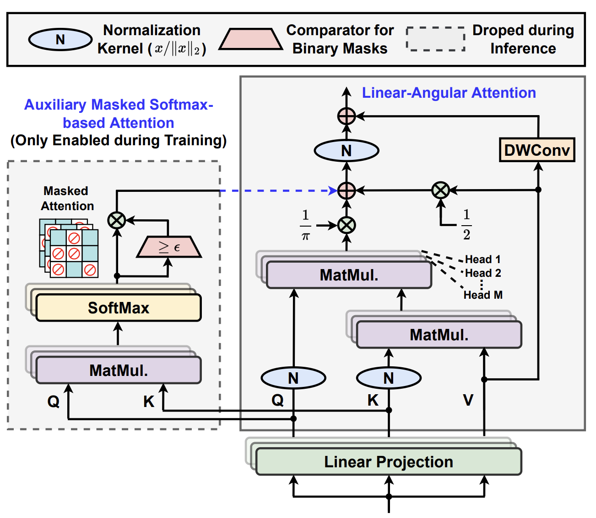
Castling-ViT: Compressing Self-Attention via Switching Towards Linear-Angular Attention During Vision Transformer Inference
In CVPR 2023 (Acceptance rate: 25%).
H. You*, Y. Xiong*, X. Dai, B. Wu, P. Zhang, H. Fan, P. Vajda, Y. Lin
[Paper] [Code] [Project] [Slide] [Poster] [Talk@CVPR]
Meta Internship Project -
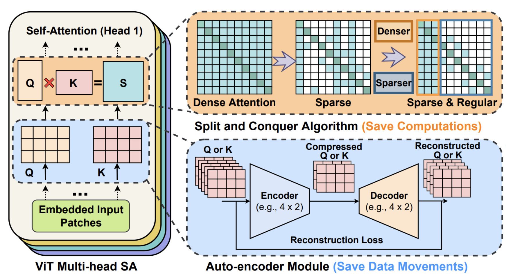
ViTCoD: Vision Transformer Acceleration via Dedicated Algorithm and Accelerator Co-Design
In HPCA 2023 (Acceptance rate: 25%)
H. You, Z. Sun, H. Shi, Z. Yu, Y. Zhao, Y. Zhang, C. Li, B. Li, Y. Lin
Selected as the Meta Faculty Research Award of 2022 !
[Paper] [Code] [Project] [Slide] [Poster] [Talk@GT] [Talk@HPCA] -
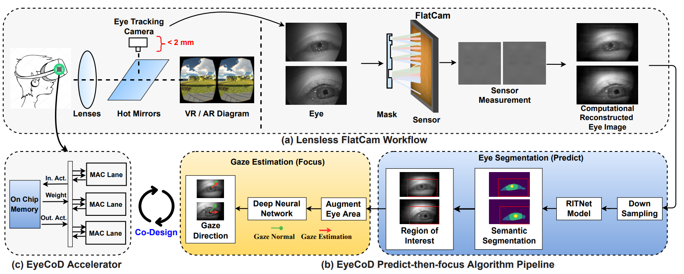
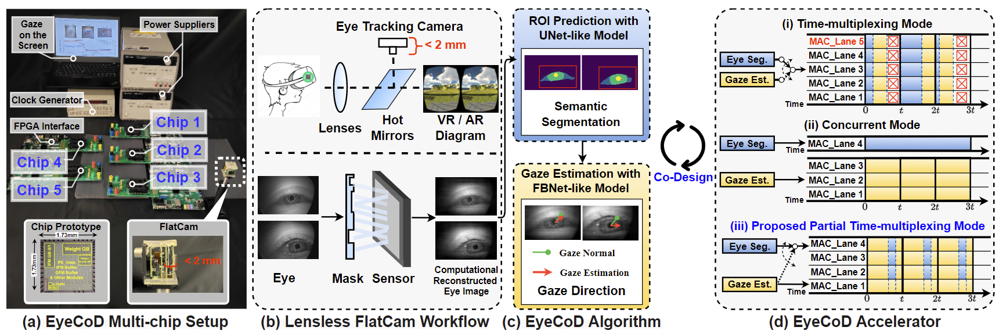
EyeCoD: Eye Tracking System Acceleration via FlatCam-Based Algorithm and Accelerator Co-Design
In IEEE Micro's Top Pick of 2023 (Top 12 in All Accepted Computer Architecture Papers of 2022)
H. You*, C. Wan*, Y. Zhao*, Z. Yu*, Y. Fu, J. Yuan, S. Wu, S. Zhang, Y. Zhang, C. Li, V. Boominathan, A. Veeraraghavan, Z. Li, Y. Lin
[Paper] [Project] [Slide] [Poster@ISCA] [Poster@CoCoSys] [Talk@ISCA] -
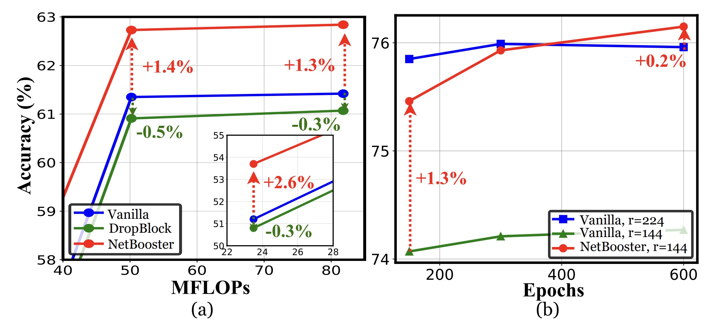
NetBooster: Empowering Tiny Deep Learning By Standing on the Shoulders of Deep Giants
In DAC 2023 (Acceptance rate: 23%)
Z. Yu, Y. Fu, J. Yuan, H. You, Y. Lin
[Paper] -
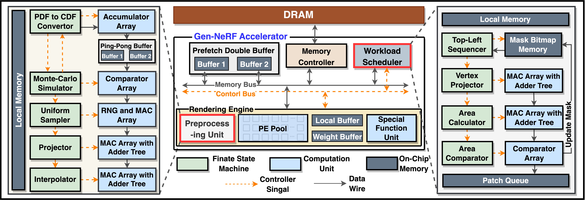
Gen-NeRF: Efficient and Generalizable Neural Radiance Fields via Algorithm-Hardware Co-Design
In ISCA 2023 (Acceptance rate: 21%)
Y. Fu, Z. Ye, J. Yuan, S. Zhang, S. Li, H. You, Y. Lin
[Paper] -
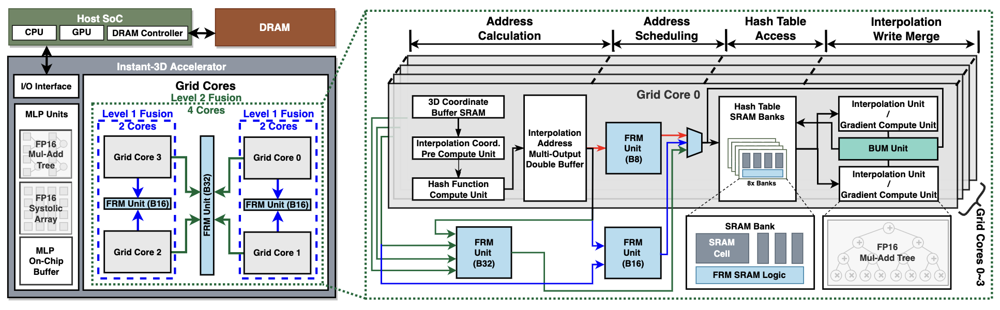
Instant-3D: Instant Neural Radiance Fields Training Towards Real-Time AR/VR 3D Reconstruction
In ISCA 2023 (Acceptance rate: 21%)
S. Li, C. Li, W. Zhu, B. Yu, Y. Zhao, C. Wan, H. You, H. Shi, Y. Lin
[Paper] -
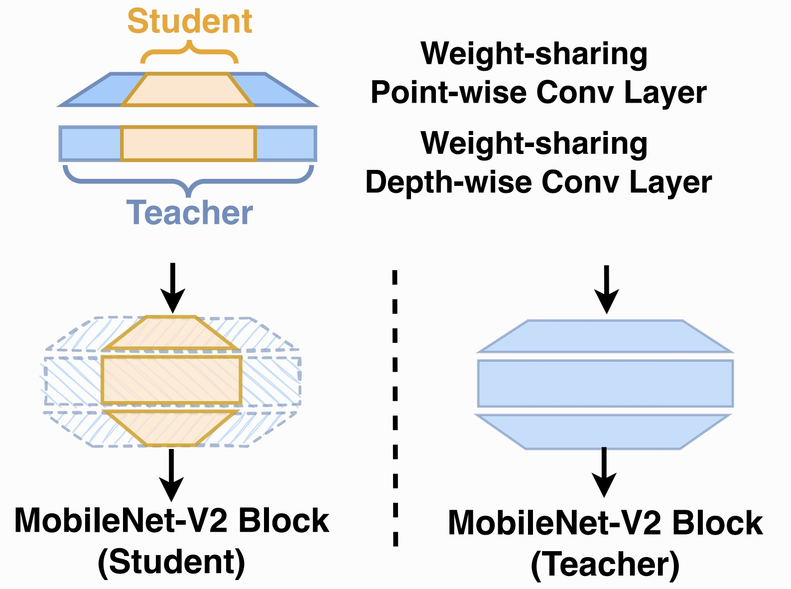
NetDistiller: Empowering Tiny Deep Learning via In Situ Distillation
In IEEE Micro
S. Zhang, Y. Fu, S. Wu, J. Dass, H. You, Y. Lin
[Paper]
Year 2022:
-
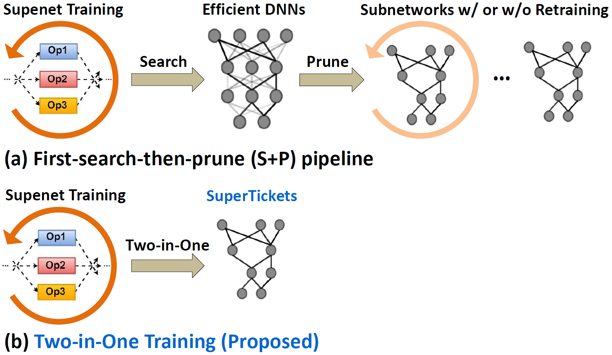
SuperTickets: Drawing Task-Agnostic Lottery Tickets from Supernets via Jointly Architecture Searching and Parameter Pruning
In ECCV 2022 (Acceptance rate: 20%)
H. You, B. Li, Z. Sun, X. Ouyang, Y. Lin
[Paper] [Code] [Slide] [Poster] [Talk@ECCV]
Baidu Research Internship Project -
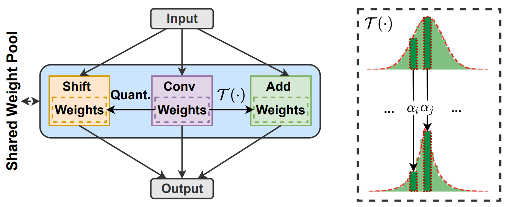
ShiftAddNAS: Hardware-Inspired Search for More Accurate and Efficient Neural Networks
In ICML 2022 (Acceptance rate: 20%)
H. You, B. Li, H. Shi, Y. Fu, Y. Lin
[Paper] [Code] [Project] [Slide] [Talk@ICML]
Baidu Research Internship Project -
EyeCoD: Eye Tracking System Acceleration via FlatCam-Based Algorithm and Accelerator Co-Design
In ISCA 2022 (Acceptance rate: 17%)
H. You*, C. Wan*, Y. Zhao*, Z. Yu*, Y. Fu, J. Yuan, S. Wu, S. Zhang, Y. Zhang, C. Li, V. Boominathan, A. Veeraraghavan, Z. Li, Y. Lin
Selected as the IEEE Micro’s Top Pick of 2023 !
[Paper] [Code] [Project] [Slide] [Poster@ISCA] [Poster@CoCoSys] [Talk@ISCA] [IEEE Micro’s TopPick’23]
In Collaboration with Meta -
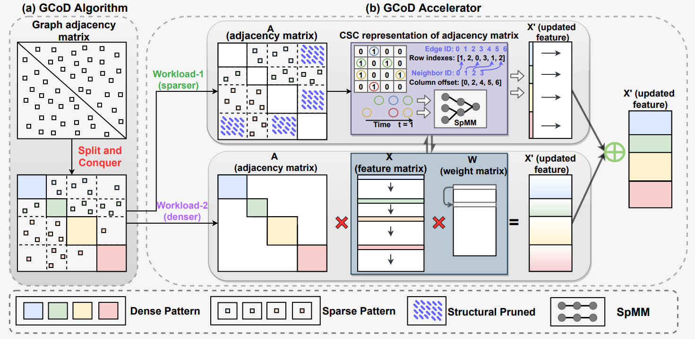
GCoD: Graph Convolutional Network Acceleration via Dedicated Algorithm and Accelerator Co-Design
In HPCA 2022 (Acceptance rate: 30%)
H. You, T. Geng, Y. Zhang, A. Li, Y. Lin
[Paper] [Code] [Slide] [Talk@HPCA] -
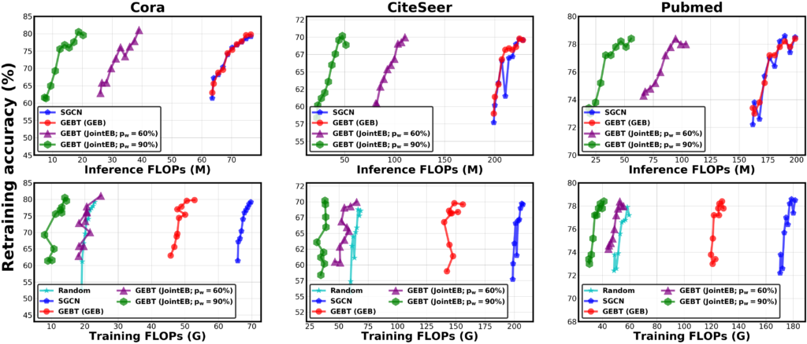
Early-Bird GCNs: Graph-Network Co-Optimization Towards More Efficient GCN Training and Inference
In AAAI 2022 (Acceptance rate: 15%)
H. You, Z. Lu, Z. Zhou, Y. Fu, Y. Lin
[Paper] [Code] [Slide] [Poster] [Talk@AAAI] -
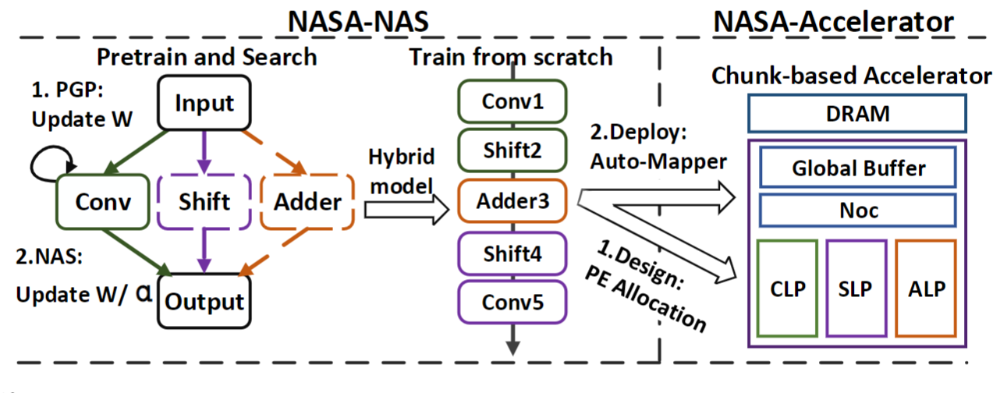
NASA: Neural Architecture Search and Acceleration for Hardware Inspired Hybrid Networks
In ICCAD 2022 (Acceptance rate: 24%)
H. Shi, H. You, Y. Zhao, Z. Wang, Y. Lin
[Paper] -
 i-FlatCam: A 253 FPS, 91.49 µJ/Frame Ultra-Compact Intelligent Lensless Camera System for Real-Time and Efficient Eye Tracking in VR/AR
i-FlatCam: A 253 FPS, 91.49 µJ/Frame Ultra-Compact Intelligent Lensless Camera System for Real-Time and Efficient Eye Tracking in VR/AR
In VLSI 2022
Y. Zhao, Z. Li, H. You, Y. Fu, Y. Zhang, C. Li, C. Wan, S. Wu, X. Ouyang, V. Boominathan, A. Veeraraghavan, Y. Lin
Won the first place in University Best Demonstration at DAC 2022 !
[Paper] [Demo] -
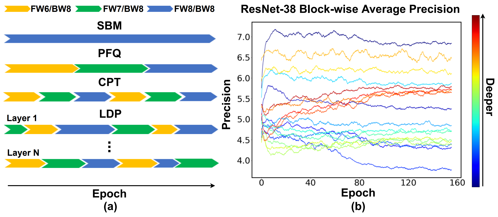
LDP: Learnable Dynamic Precision for Efficient Deep Neural Network Training and Inference
In TinyML 2022
Z. Yu, Y. Fu, S. Wu, M. Li, H. You, Y. Lin
[Paper]
Year 2021:
-
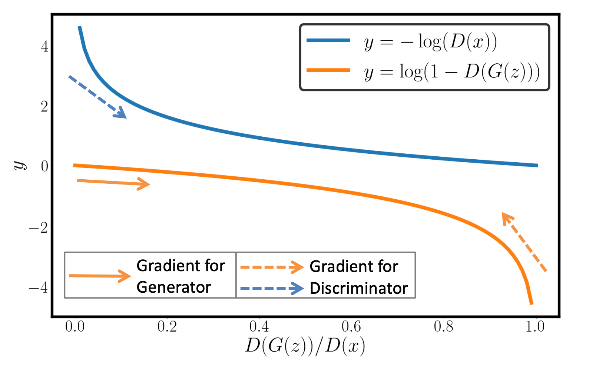
Bayesian Cycle-Consistent Generative Adversarial Networks via Marginalizing Latent Sampling
In IEEE TNNLS, 2021
H. You, Y. Cheng, T. Cheng, C. Li, P. Zhou
[Paper@IEEE] [Paper@arXiv] [Code] -
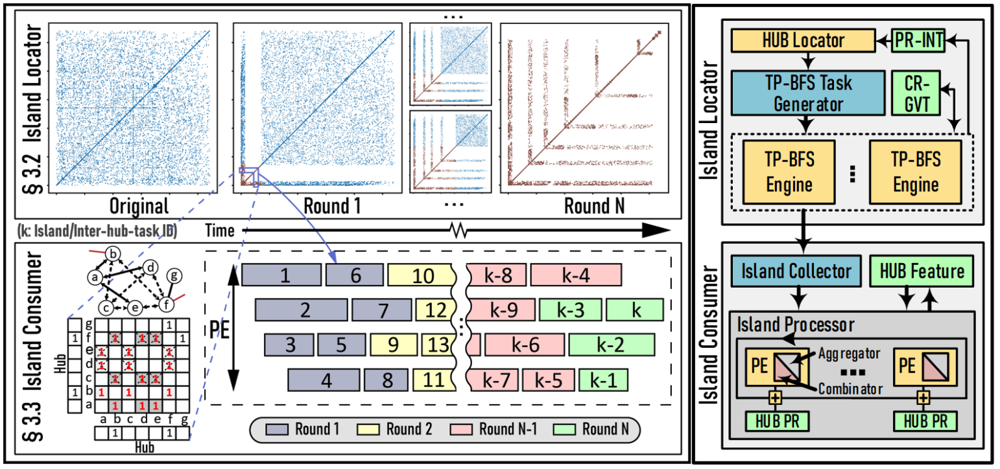
I-GCN: A GCN Accelerator with Runtime Locality Enhancement through Islandization
In MICRO 2021 (Acceptance rate: 22%)
T. Geng, C. Wu, Y. Zhang, C. Tan, C. Xie, H. You, M. Herbordt, Y. Lin, A. Li
[Paper] -
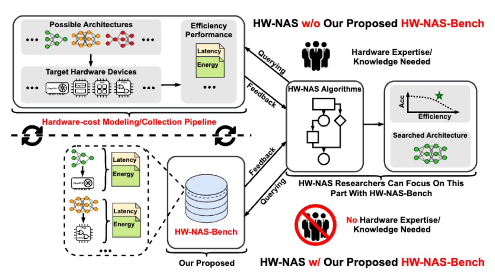
HW-NAS-Bench: Hardware-Aware Neural Architecture Search Benchmark
In ICLR 2021 Spotlight (Acceptance rate: 4%)
C. Li, Z. Yu, Y. Fu, Y. Zhang, Y. Zhao, H. You, Q. Yu, Y. Wang, C. Hao, Y. Lin
[Paper] -
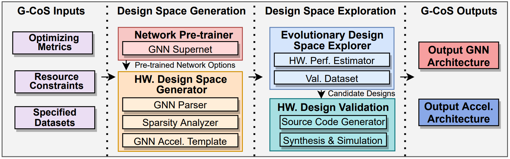
G-CoS: GNN-Accelerator Co-Search Towards Both Better Accuracy and Efficiency
In ICCAD 2021 (Acceptance rate: 23%)
Y. Zhang, H. You, Y. Fu, T. Geng, A. Li, Y. Lin
[Paper] -
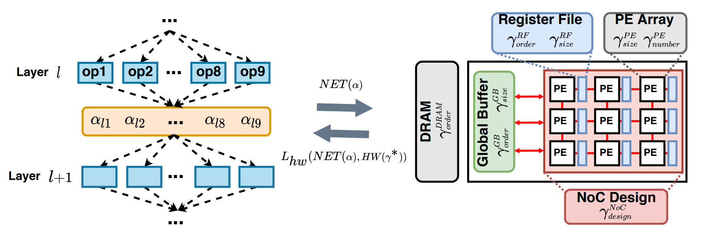
DIAN: differentiable accelerator-network co-search towards maximal DNN efficiency
In ISLPED 2021
Y. Zhang, Y. Fu, W. Jiang, C. Li, H. You, M. Li, V. Chandra, Y. Lin
[Paper]
Year 2020:
-
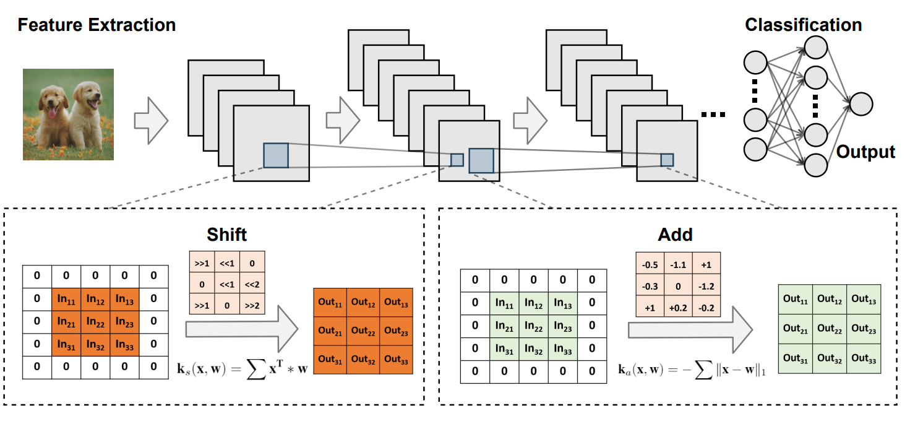
ShiftAddNet: A Hardware-Inspired Deep Network
In NeurIPS 2020 (Acceptance rate: 20%)
H. You, X. Cheng, Y. Zhang, S. Liu, Z. Liu, Z. Wang, Y. Lin
[Paper] [Code] [Slide] [Poster] [Talk@NeurIPS] [Talk@RICE]
In Collaboration with Alibaba DAMO Academy -
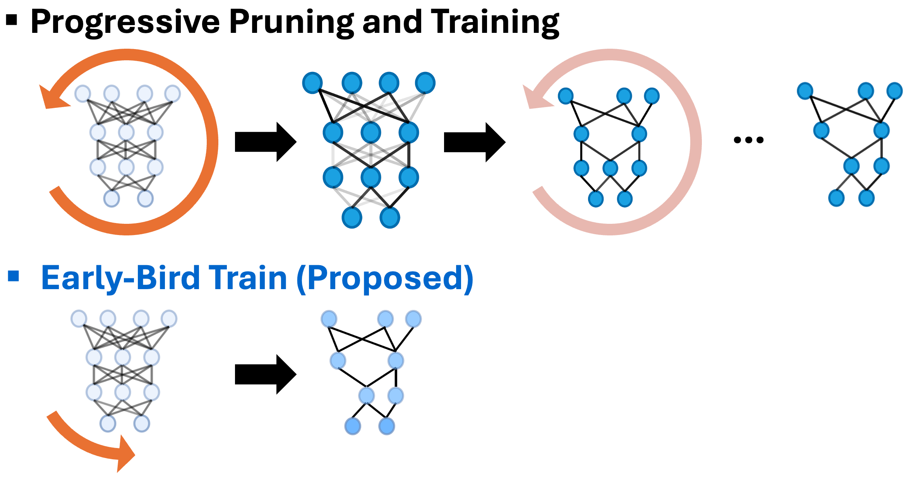
Drawing Early-Bird Tickets: Towards More Efficient Training of Deep Networks
In ICLR 2020 Spotlight (Acceptance rate: 4%)
H. You, C. Li, P. Xu, Y. Fu, Y. Wang, X. Chen, R.G. Baraniuk, Z. Wang, Y. Lin
Selected as an ICLR Spotlight !
[Paper] [Code] [Slide] [OpenReview] [Talk@ICLR] -
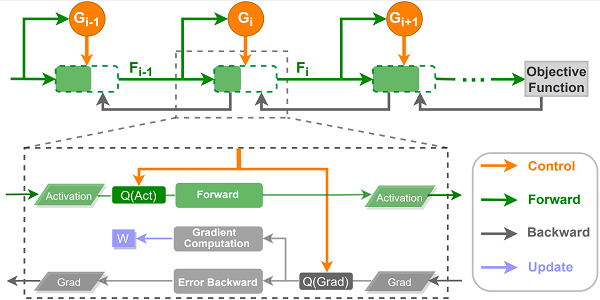
FracTrain: Fractionally Squeezing Bit Savings Both Temporally and Spatially for Efficient DNN Training
In NeurIPS 2020 (Acceptance rate: 20%)
Y. Fu, H. You, Y. Zhao, Y. Wang, C. Li, K. Gopalakrishnan, Z. Wang, Y. Lin
[Paper] -
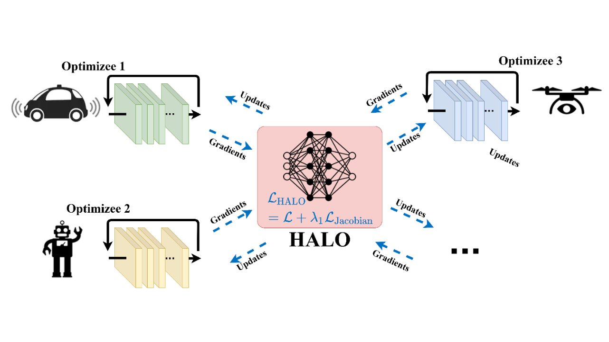
HALO: Hardware-Aware Learning to Optimize
In ECCV 2020 (Acceptance rate: 27%)
C. Li, T. Chen, H. You, Z. Wang, Y. Lin
[Paper] -
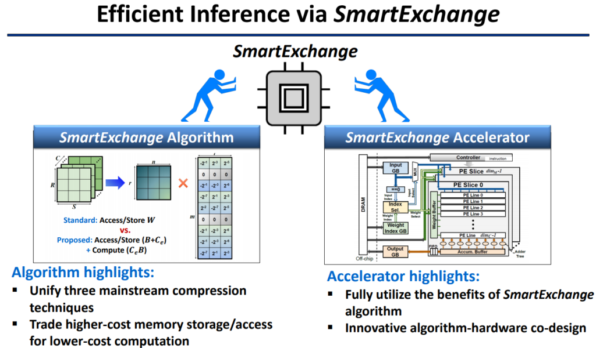
SmartExchange: Trading Higher-cost Memory Storage/Access for Lower-cost Computation
In ISCA 2020 (Acceptance rate: 18%)
Y. Zhao, X. Chen, Y. Wang, C. Li, H. You, Y. Fu, Y. Xie, Z. Wang, Y. Lin
[Paper]
You can also find the complete list of publications from Google Scholar.